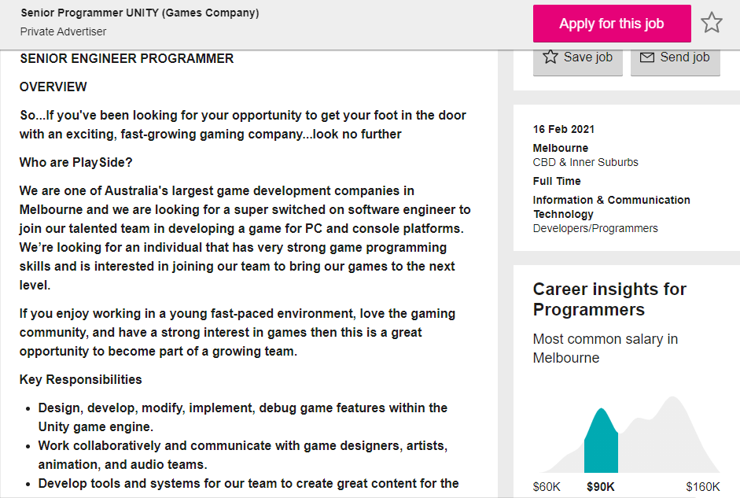
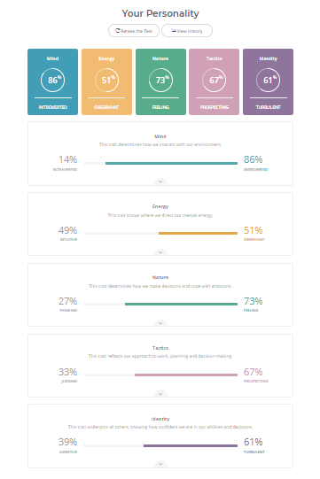
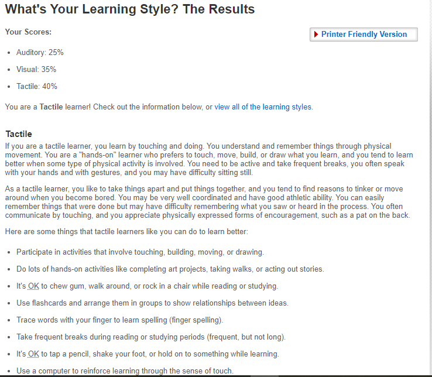
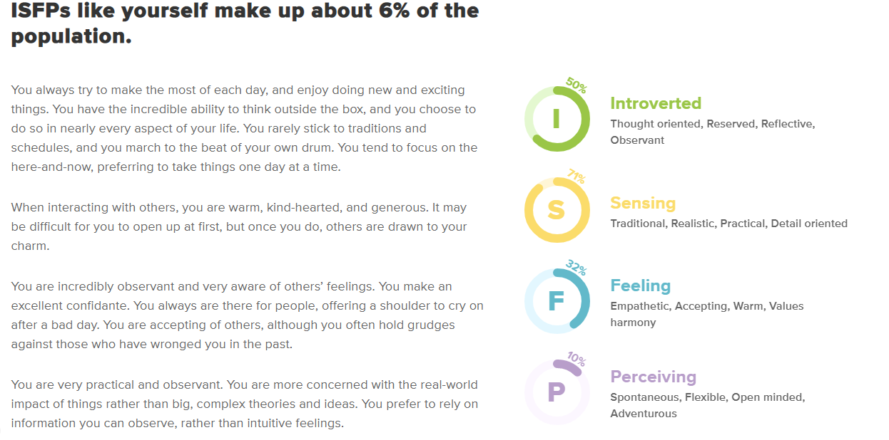

My Website
Personal Information
 My name is Domenic, but most people call me Dom which I prefer anyways. I was born and raised in Melbourne and I am a first-year student after graduating from High School and I am studying Bachelor of Information Technology. I chose to study at RMIT for multiple reasons, but mainly because of its reputation of being an excellent technology-based university and the location. I enjoy gaming, especially games like Call of Duty, NBA2K, Pokémon, Fortnite and Terraria. I also have a large passion for basketball and the NBA. I really enjoy programming and while I only know the basics, I am trying to learn more and improve as programming is what I wish to pursue in my career. I don’t have much of an idea for the IT project yet, but I will be thinking of an idea.
My name is Domenic, but most people call me Dom which I prefer anyways. I was born and raised in Melbourne and I am a first-year student after graduating from High School and I am studying Bachelor of Information Technology. I chose to study at RMIT for multiple reasons, but mainly because of its reputation of being an excellent technology-based university and the location. I enjoy gaming, especially games like Call of Duty, NBA2K, Pokémon, Fortnite and Terraria. I also have a large passion for basketball and the NBA. I really enjoy programming and while I only know the basics, I am trying to learn more and improve as programming is what I wish to pursue in my career. I don’t have much of an idea for the IT project yet, but I will be thinking of an idea.
Interest in IT
I am most interested in the programming aspect of IT.
Ever since I was a kid I always wanted to make my own game and I wanted to be the game designer until a few years ago when I realised I wasn’t that good at drawing or designing.
I turned towards the other aspect which is the programming side and ever since then I have been so intrigued, and I have wanted to learn more about it.
I don’t have very much IT experience outside of what I learnt in high school, which is very little and that is why I am doing this course.
I chose to study at RMIT because of its highly regarded reputation of being a great technology-based university as well as the different opportunities that the course presents and the amount of learning I can have.
It also has a great location that I can get to easily.
I expect to learn the basics of information technology in this course, including programming, security and protection, hardware and software, databases and database management, website building, user experience and design and much more about the overall world of IT.
Ideal Job
 This is an example of a job that I would be interested in going for. The role itself is a senior programmer for a “fast-growing gaming company” known as PlaySide. The role would require me to work with a team of programmers and developers to develop games for PC and other platforms. The role also searches for those who a strong interest in games and the gaming community.
The skills required for this position include solid math skills, good communication skills, a passion for making games, the ability to work on multiple tasks concurrently, enjoys working with peers from different teams, strong attention to detail and can work without the need to be directed. Some of the required qualifications include at least 6-7 years’ worth of experience using the Unity game engine, been involved in at least 1 or 2 major IOS/Android projects, a strong background in C#, and a tertiary degree or an equivalent professional qualification in a relevant field.
I currently do not have any of the specified qualifications required for this position, as I do not have at least 6 or 7 years of experience using Unity, I have not been involved in any major IOS/Android projects, I am not strong with coding and I don’t have a professional qualification. I do have some of the required skills, as I have great communication skills and I can work with others in teams to solve problems and create solutions, and I am able to work without needing to be directed, have great math skills and while I don’t know how to do I, I am very passionate about making games.
To gain the required skills to be able to qualify for a position like this I will complete my university course which will hopefully give me lots of skills based around technology and programming. I will also start to learn how to use the Unity game engine and also begin in my own personal projects in the future to give myself some experience in making games.
Personal Profile
 Myers-Briggs Test Results
According to this test, I am “The Adventurer (ISFP-T)”, which means that I am “happy to be myself”, that I believe that meaning is in every expression of life. Some of the strengths of this personality type include being imaginative, passionate, curious, sensitive to others, artistic and charming. Some of the weaknesses include being fiercely independent, unpredictable, easily stressed, overly competitive and fluctuating self-esteem.
 Online Learner Style Test Results
According to this online learner style test, I am a tactile learner, which means that I learn best by touching and doing things. As a tactile learner, I prefer to take things apart and then put them back together again and I tend to find reasons to move around or tinker with things. I tend to learn better when there is some sort of physical activity involved and I tend to believe that taking breaks and being active while studying is good for you.
 Online Personality Test Results
I chose to complete a second personality quiz and on this quiz my results came back as saying that my personality matches “The Harmonizers (ISFP)” which means that I always try to make the most of each day, and that I enjoy doing new and exciting things. It may be difficult for me to interact with others, but once I do people see that I am warm and kind-hearted. I am practical and observant and very aware of others’ feelings.
Project Idea
Overview
My project idea is to create a either a full basic game or a demo of a bigger game. The game can be of whatever genre the creator wants, but the genre of game that I would want to create would be an RPG that has an interesting story and plot. My game would involve a player going from a basic underpowered player to an overpowered character that can kill any monsters and bosses they come across. It would involve the player exploring a world to find hidden loot to become stronger, as well as risking their lives by going across the world to mine different fictional ores that don’t exist. This game would play similarly to Minecraft or Terraria, however it would be different as I personally think there are holes that can be improved upon. The game should be able to be played however the user wishes. Ideally the game should be created using the unity game engine software, but it can be made using another game engine as well. Designs of sprites/characters must be completed alongside the game, as well as a brief for how the game should be played, the goal of the game, and what the player gets out of the game. If it is a larger game with a thought-out storyline/plot, then the story must be given as well. The design of the game comes down to the creator, and the goal must be to have fun.
Motivation
I personally find making a game to be a fantastic way of applying knowledge of certain aspects of Information Technology such as programming, design, user experience, management etc. and it will be a great way to show the understanding as well. While there are thousands of games out there that can be played by anyone, the goal is to come up with a game that is our own and is as original as a game and design can be. This is also a chance to give the students an opportunity to show their creativity and their imagination, as they are able to create whatever game they wish while also using their own designs, story-telling and knowledge to create a fun gaming experience.
Description
As stated in the overview, I would like to make an RPG style game that includes a well-thought-out story, plot, progression, characters etc. however, only a demo would be required as making a larger game would take much longer and it would take too long to be done in the amount of time required, so only a demo is required. If the developer wishes to create a simpler game, they will have to provide the full game as well as their designs, story etc. In the design, the target audience should also be discussed, as games can have directed focus on a particular type of person that would be interested in the game.
Features: Some of the features of this game will include a story mode that has the main character completing a/multiple quest(s) in order to fulfil a specific goal in mind. For example, if the game was about cooking, the main goal of the game could be to cook all available meals in the game by roaming and searching for different ingredients and coming up with every single recipe, good and bad. The game can feature an achievement system to give the player a sense of reward when completing certain goals or objectives, and the game should be interesting so that the player doesn’t get bored of it and wants to come back and play it. The design must also state the goal of the game, whether it is to educate, entertain, inform and more.
How it can be played: Games can be played in many different ways across many different platforms. When submitting the design, the way the game is played or should be played and on what platform it is designed for should be stated and accounted for. The game can be designed for any platform, whether that be mobile, pc or console, but it must be stated for what platform(s) specifically. As well as the platform the game will be available on, the creator should also state how the player should actually play the game. This can be given in the form of instructions or a guide which the player can read before playing the game so that they know already how to play the game.
Design: A written/typed up design must be given along with the actual game itself as physical evidence of the development and design process of the game/demo. This design must include everything that eventually will go into the game. This would include all the different designs for all the characters within the game, the instructions for the game, the coding used, the platform on which the game is to be available on, the software used to create the game, the story of the game and more. This written design is crucial to the project, as it must detail everything about the game and the development behind it. The design can be written up in whatever fashion the developer wishes, such as a pdf or word document, or it can be printed out to create a portfolio as well. No matter which way the developer chooses to write up the design, it must include everything about the game.
Tools and Technologies
The main tools required for this project would be the use of a game engine such as Unity, GDevelop or any other game engine that the developer would like to use in order to develop their game. A copy of the coding that the developer uses should also be kept somewhere separate to the coding used in the game engine. Tools to practice coding before actually applying can be used as well, for example, the code can be practiced in a tool such as python first, and then transported over, or it can be put in something simple such as notepad.
Skills Required
Skills that are required for this specific project would include creativity and artistic skills, as designs play an extremely large role in video games, as well as some coding knowledge as the game needs to be functional/playable at the very least. Good communication and teamwork are required as well, as it is key that everyone within the group agrees to the ideas proposed and can all use their own creativity to create a fun and interesting gaming experience. Programming skills to create a game as well as the software required to program and design the game can be obtained online, through the use of tutorials by certified websites.
Outcome
The outcome of this project, if completed successfully, would mean that a unique, fun, and interesting gaming experience would have been created through your game that has been made. The game should be tested by someone else outside of the group to check for glitches and ensure the gameplay is unique as well. If the result of the game is a fun game that is directed towards the target audience, then the impact will be large as it means the goals that were created for the game were met. Upon completion of the game, submission of the design for the game must also be fully completed and submitted as well, so that all of the ideas, designs, etc. that are in the game have physical evidence and can be evaluated deeper.